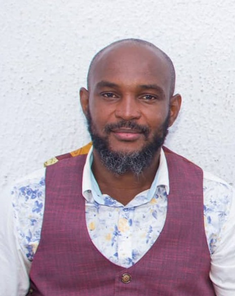

About Me
Hello! My name is Ikechukwu Kelvin Chichi and I am from Delta state, Nigeria. I enjoy playing video games. I am a student of Brigham Young University-Idaho, studying a degree in Software Development but currently taking a certificate course in Web and Computer Programming.

Nigeria is located on the west of Africa, bordering the Gulf of Guinea in the south, the Republic of Benin in the west, Chad and Cameroon in the east, and Niger in the north. Delta state is called The Big Heart, and Asaba is the Capital. Agriculture is the mainstay of economy; yams, cassava, oil palm produce, rice, and corn are grown for local consumption. Delta is a major exporter of petroleum, rubber, timber and palm oil.